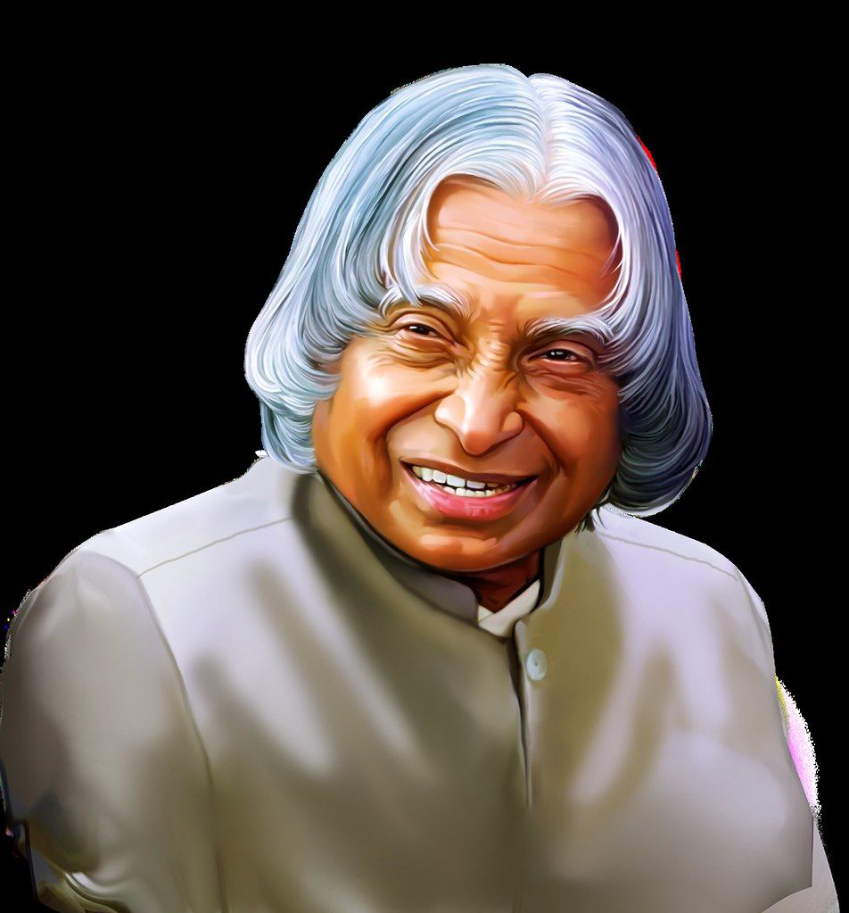

Hon. APJ Abdul Kalam

Avul Pakir Jainulabdeen Abdul Kalam was an Indian aerospace scientist and
politician who served as the 11th President of Indian from
Rameswaram, TamilNadu and studied physics and aerospace engineering.
Indian scientist and politician who played a leading role in the development of India’s missile and nuclear weapons programs. He was president of India from 2002 to 2007.
Kalam earned a degree in aeronautical engineering from the Madras Institute of Technology and in 1958 joined the Defence Research and Development Organisation (DRDO).
In 1969 he moved to the Indian Space Research Organisation, where he was project director of the SLV-III, the first satellite launch vehicle that was both designed and produced in India.
Rejoining DRDO in 1982, Kalam planned the program that produced a number of successful missiles, which helped earn him the nickname “Missile Man.”
Among those successes was Agni, India’s first intermediate-range ballistic missile, which incorporated aspects of the SLV-III and was launched in 1989.
Awards: Bharat Ratna, Padma Vibhushan, Padma Bhushan ,Hoover Medal,more
Here's the timeline of Dr. Kalam's life:
- 1931 - Born on 15 October 1931 to a Tamil Muslim family in Rameshwaram
- 1954 - Graduated in Physics in 1954 from Madras University
- 1955 - Moved to Madras in 1955 to study Aerospace Engineering in Madras Institute of Technology
- 1960 - Joined DRDO (Defence Research and Development Organisation)
- 1969 - Was transferred to ISRO(Indian Space and Research Organisation) as a Project Director
- 1980 - Sucessfully deployed The Rohini Satellite in near Earth orbit
- 1981 - Padma Bhushan – Government of India
- 1990 - Padma Vibhushan– Government of India
- 1970-99
ACHIEVEMENTS - Project Devil, Project Valiant, Project Prithvi, Cheif Advisor to the Prime Minister and The Secretary of the DRDO
- 1997 - Honoured with Bharat Ratna - The Highest Civilian's Award
- 1998- Veer Savarkar Award– Government of India
- 1997- Indira Gandhi Award for National Integration – Government of India
- 2000- SASTRA Ramanujan Prize– Shanmugha Arts,Science,Technology & Research Academy, India
- 2002-07 - Served as The President of The India
- 2013 - Von Braun Award – National Space Society
- 2015 - We lost him Forever
Honours
- United Nations declared his birthday as World Students' Day
- Government of Tamil Nadu announced that an award will be given in his name Dr. A. P. J. Abdul Kalam Award
- On 4 September 2015, Wheeler Island near the coast of Indian state Orissa has been renamed to honour the late
Indian president, Dr. A.P.J. Abdul Kalam as A.P.J. Abdul Kalam Island.